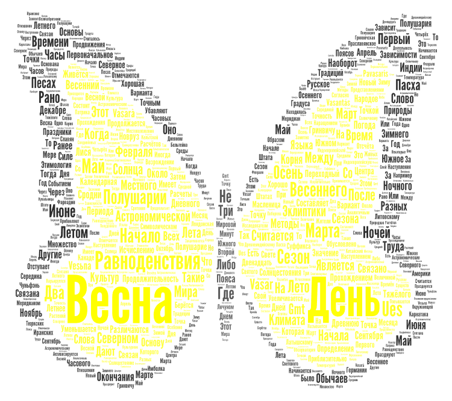

Весна пришла, и теплые ладошки
Своих лучей несет во все окошки
Теплее дни, уже набухли почки
И ждут свой час зеленые листочки
Давно простились мы с зимой
Весна пришла, звенит ручей
Вернулись ласточки домой
И нам с весною веселей
Солнышко ласково греет весною
Птички вернулись, щебечут в окне
Завтра пошире окошко открою
И улыбнусь долгожданной весне
И вот она, Царица на планете
Владения обходит неспеша…
И от нее нам солнце ярче светит
Весна, ну до чего ты хороша…
С . А л ь б е р т
